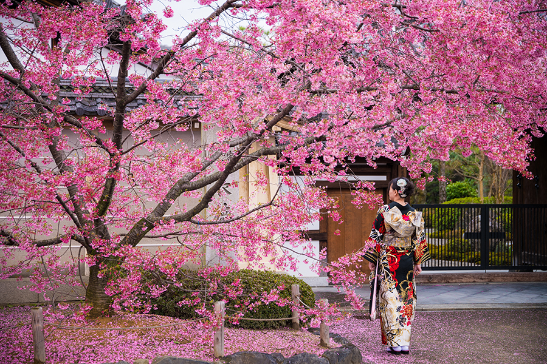

Home
Culture
Places
Gallery
About me
Contact
Gallery
Osaka Castle
Kimono
Tokyo at night
A small shrine
Kyoto
Harajuku
Cat Cafe MoCHA
An Onsen(Hot Spring)
Tokyo Skytree
Nakameguro
Torii Gate (Gate of a Shinto shrine)

Kyoto during Spring